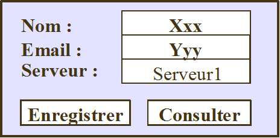

TP RMI
Daniel Hagimont
Daniel.Hagimont@enseeiht.fr
L'objectif de ce TP est d'utiliser Java
RMI pour implanter une petite application dans laquelle une applet
permet de saisir les coordonnées d'une personne (nom, adresse email) et
de les enregistrer dans un serveur. L'interface permet de sélectionner
le serveur dans lequel la personne doit être enregistrée. On gèrera 2
serveurs.
L'application permet également de rechercher l'email d'une personne qui
a été enregistrée en indiquant le serveur dans lequel faire cette
recherche.

Si on ne trouve pas la personne dans le serveur indiqué, la recherche
est alors propagée au second serveur.
L'interface d'un serveur est la suivante :
public interface Carnet extends Remote {
public void Ajouter(SFiche sf) throws
RemoteException;
public RFiche Consulter(String n, boolean forward)
throws RemoteException;
}
public interface SFiche extends
Serializable {
public String getNom ();
public String getEmail ();
}
public interface RFiche extends Remote {
public String getNom () throws RemoteException;
public String getEmail () throws RemoteException;
}
L'enregistrement d'une personne utilise la sérialisation pour envoyer
au serveur une copie d'un objet d'interface SFiche.
La consultation retourne une référence à un objet RMI d'interface
RFiche ; l'applet qui consulte peut alors récupérer l'adresse email par
un appel à distance sur cette référence.
La méthode de consultation inclut un paramètre booléen forward indiquant si la requête
doit être propogée à l'autre serveur (pour éviter de boucler).
On vous donne :
- Carnet.java : l'interface d'un serveur
- SFiche.java : l'interface de l'objet
sérialisé pour l'enregistrement auprès d'un serveur
- RFiche.java : l'interface de l'objet
RMI retourné lors de la consultation auprès d'un serveur
- Saisie.java et page.html : l'applet implantant l'interface graphique
de l'application
Pour lancer l'applet :
- en standalone : java Saisie
- avec l'appletviewer :
appletviewer -J-Djava.security.policy=java.policy
- depuis un navigateur, plus
compliqué, il faut signer l'applet ...
Vous devez :
- implanter CarnetImpl.java : la classe d'un serveur
- implanter SFicheImpl.java : la classe de l'objet sérialisé
- implanter RFicheImpl.java : la classe de l'objet RMI retourné par le
serveur
- compléter Saisie.java : pour faire les appels aux serveurs